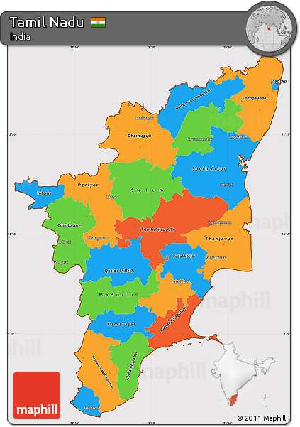

Tamil Nadu (/ˌtæmɪl ˈnɑːduː/; Tamil: [ˈtamiɻ ˈnaːɽɯ] ⓘ, abbr. TN) is the southernmost state of India. The tenth largest Indian state by area and the sixth largest by population, Tamil Nadu is the home of the Tamil people, who speak the Tamil language, one of the longest surviving classical languages and which serves as its official language. The capital and largest city is Chennai. Located on the south-eastern coast of the Indian peninsula, Tamil Nadu is straddled by the Western Ghats and Deccan Plateau in the west, the Eastern Ghats in the north, the Eastern Coastal Plains lining the Bay of Bengal in the east, the Gulf of Mannar and the Palk Strait to the south-east, the Laccadive Sea at the southern cape of the peninsula, with the river Kaveri bisecting the state. Politically, Tamil Nadu is bound by the Indian states of Kerala to the west, Karnataka to the northwest, Andhra Pradesh to the north, and encloses part of the union territory of Puducherry. It shares an international maritime border with the Northern Province of Sri Lanka at Pamban Island.
